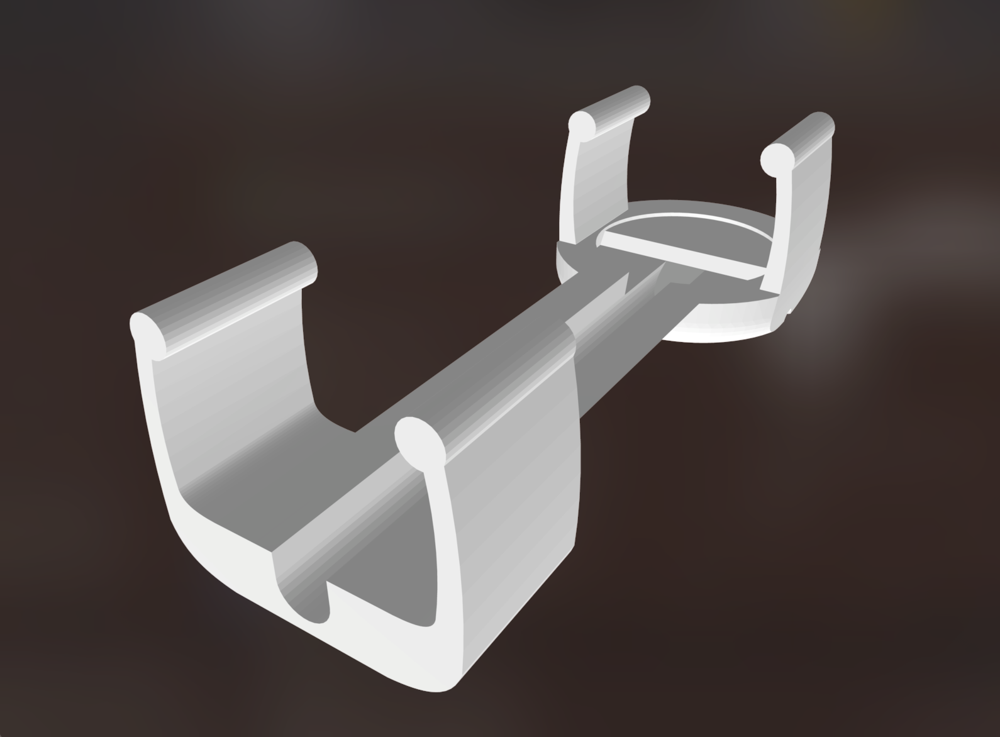

準備-ハードウェア編
このシステムでは、トーンチャイムに取り付けた振動センサー（コンタクトマイク）をコンピューター上で解析して、照明や映像に変換します。
構成別必要機材
オリジナルのWSでは、トーンチャイム8台を、無線信号でコンピューターまで飛ばしていましたが、この構成は大掛かりかつ高価になるため、本ドキュメントでは以下の3パターンの構成例を示します。
- トーンチャイムx8 無線接続
- トーンチャイムx2 無線接続
- トーンチャイムx2 有線接続
| カテゴリ | 8台-無線 | 2台-無線 | 2台-有線 | |
|---|---|---|---|---|
| 楽器 | トーンチャイム | 8 | 2 | 2 |
| PC | コンピューター | 1 | 1 | 1 |
| 映像 | ディスプレイorプロジェクター | 1 | 1 | 1 |
| 映像接続ケーブル（HDMI等） | 1 | 1 | 1 | |
| 音関係 | コンタクトマイク（自作） | 8 | 2 | 2 |
| オーディオトランスミッタ | 4 | 1 | - | |
| 3.5mmプラグ-6.3mmプラグ変換 | - | - | 2 | |
| オーディオインターフェース | A | B | B | |
| 照明(省略可) | ディマーパック | 2 | 1 | 2 |
| 白熱電球 | 8 | 2 | 2 | |
| ENTEC DMX USB PRO | 1 | 1 | 1 | |
| XLRケーブル | 2 | 2 | 2 | |
| XLRF3-M5ピン変換 | 1 | 1 | 1 |
楽器
棒状のハンドベルのような楽器です。ワークショップでは、中音域の基本セットHB-250Nの中から8音を選んで使用しています。マイクを取り付けるための3Dプリント製アタッチメントはこの基本セットの大きさに対応しています。
コンタクトマイク

コンタクトマイクは特製のものを使用します。このマイクは、空気振動ではなく、貼り付けた物体の振動を直接拾うものです。
このマイクは、ピエゾ素子という、安価な部品をケーブルにはんだ付けすることで、簡単に作ることができます。
マイクの作成方法は、1-1 マイクの作成方法 というドキュメントを参照してください。
マイクに被せる専用のカバーは、 3Dプリンターで印刷することが可能です。こちらは、なくても動作には問題ありません。


PC関係、映像関係
- コンピューター
本ドキュメントではWindows環境を想定していますが、macOS環境でも動作できます。
CPU：
メモリ：8GB
必要な空きストレージ容量：
OS：Windows 10以上
- ディスプレイもしくはプロジェクターとスクリーン
- 特に機種問わず。
- ディスプレイ類とコンピューターを接続するケーブル（HDMIなど）x1
音関係
オーディオインターフェース
マイクから取り込んだ音をコンピュータに取り込むための装置。
A
RME FireFace UFXなど、ライン入力が8ch以上使用できるインターフェースであれば他機種でも運用可能。
B
Aを所持している場合はそのまま使用しても問題なし。
オーディオトランスミッタ（無線接続の場合）
EW112PでもOK。このトランスミッタは最大で8台まで同時使用が可能なため採用しているが、より少ないチャンネル数の構成の場合、もっと安価なものでも問題ない。会場で他のB帯を使用する機器と無線のチャンネルが干渉しないか注意。
Bluetoothなどのトランスミッタでも良いが、遅延が発生する場合がある。
照明関係
ディマーパック
- DMX信号を使ってAC100Vコンセントの電圧を制御する機器。
- 他の代替候補としては、Elation Cyber PakやLITE-PUTER DX-402Aなど。
- どれも1台で4チャンネルまで制御できるため、5台以上照明を使う場合は2台必要。
DMX-USB変換アダプタ
ENTEC DMX USB PRO
- コンピューターからUSB経由でDMX信号を制御するための変換アダプタ。
加えて以下のケーブルと変換アダプタも用意する。
- XLRケーブル 3ピンのオーディオ用と同じものでOK。長さは必要に応じて。
- XLRメス3ピン-XLR5オスピン 変換アダプタ
白熱電球
クリップライトなど、普通のコンセントに挿さる白熱電球ならなんでもよい。ただし、蛍光灯、LED球は原則使用しないこと。調光対応のものであれば使用できるが、一定以上の暗さになると完全消灯してしまう。